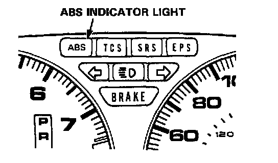

Diagnostic Strategies
Temporary Driving Conditions:1. The ABS indicator light will come on and the ABS control unit memorizes the diagnostic trouble code (DTC) under certain conditions.
- The tire(s) adhesion is lost due to excessive cornering speed.
DTC: 5, 5-4, 5-8.
- The vehicle loses traction when starting from a stuck condition on a muddy, snowy, or sandy road.
DTC: 4-1, 4-2, 4-4, 4-8.
- When the parking brake is applied for more than 30 seconds while the vehicle is being driven.
DTC: 2.
- The vehicle is driven on extremely rough road.

The ABS is OK, if the ABS indicator light goes off after the engine is restarted.
2. If you receive a customer's report that the ABS indicator light sometimes comes on, check the system using the ALB checker to confirm whether there is any trouble in the system.
Function Checks
3. The ABS indicator light will come on and the ABS control unit will store a DTC when there is insufficient battery voltage to the ABS control unit. An example would be when the battery is so weak that the car must be jump-started.
- After the battery is sufficiently recharged, the ABS indicator light will work normally after the engine is stopped and restarted.
- However, after recharging the battery, the DTC must be cleared from the ABS control unit's memory by disconnecting the ABS 2.3 (20A) fuse for at least 3 seconds.